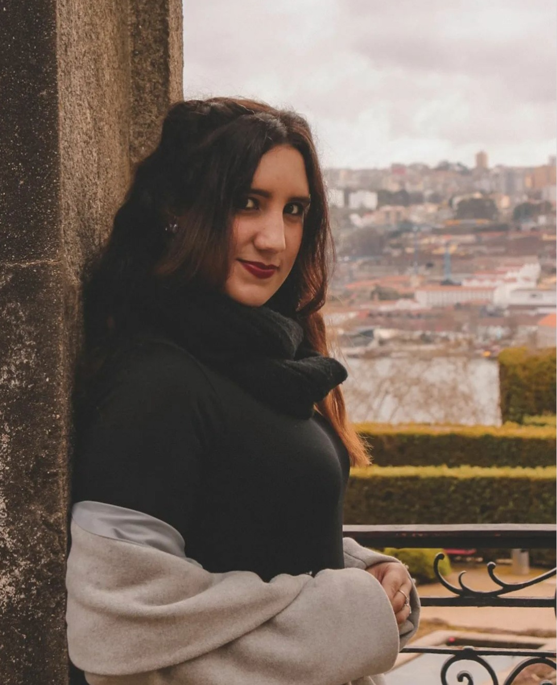

Hello, my name is Patrícia Penela, I'm 22 years old and I'm in the 2nd year of a degree in Communication Design.
I started my university path in 2017 but in a completely different area, I was studying Business Management but when I finished the course I didn't feel like a fulfilled person and so I started to think about how my life would be, I thought about all the curricular units that I had in the Management course and one of my favorites was Marketing and then I thought, I'm going to take a Master's in Digital Marketing but in the middle of all my research about the course I discovered Communication Design and this immediately captivated my attention because I consider myself a very creative person, who likes challenges and to explore new ideas. So, I decided to take another degree in Communication Design.
Besides this recently discovered taste for design I still have another passion which is photography. I've been photographing for some time but I never looked at photography as something I could do professionally, but the taste kept growing and growing until I started to explore new things in photography and to be called to do some photo sessions. To work with photography and design.
In both areas my path may still be short, but even though it is short it has been an adventure that I am loving.
I hope you enjoy exploring my projects to the fullest.
Kisses.